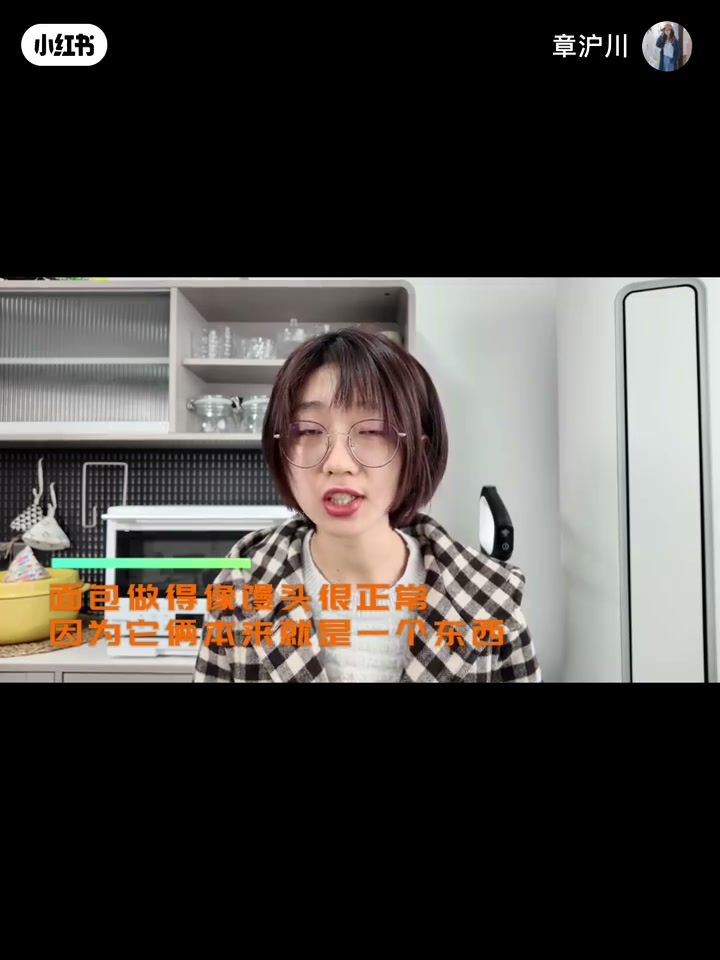
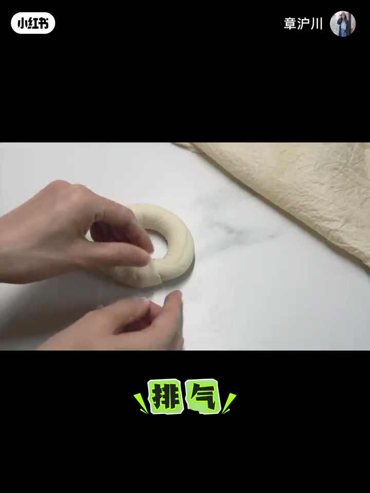
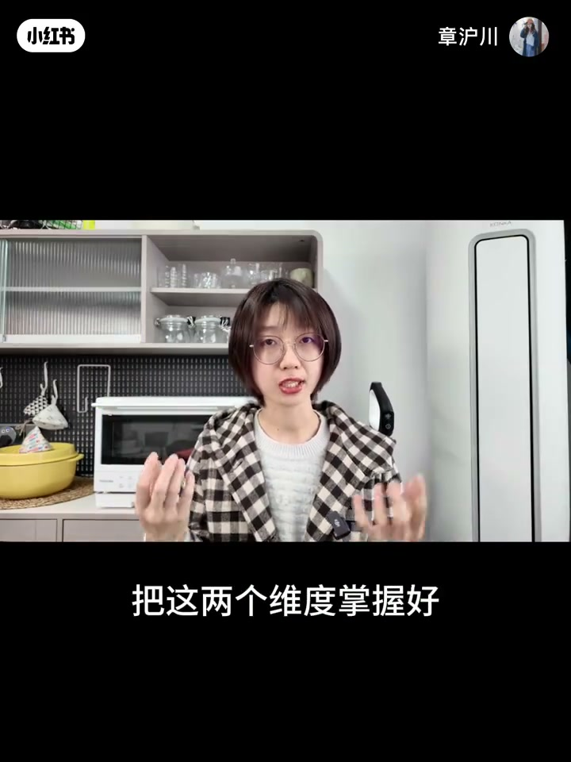
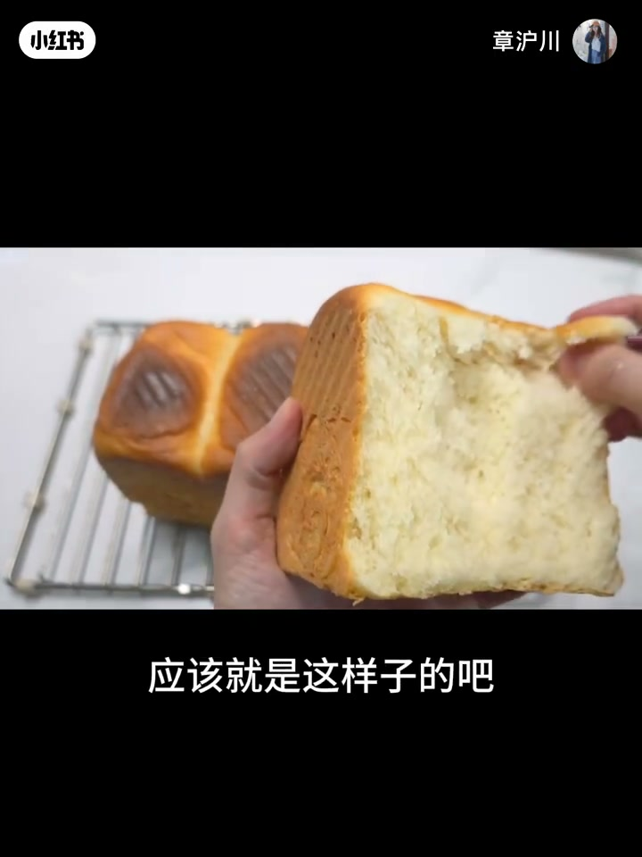
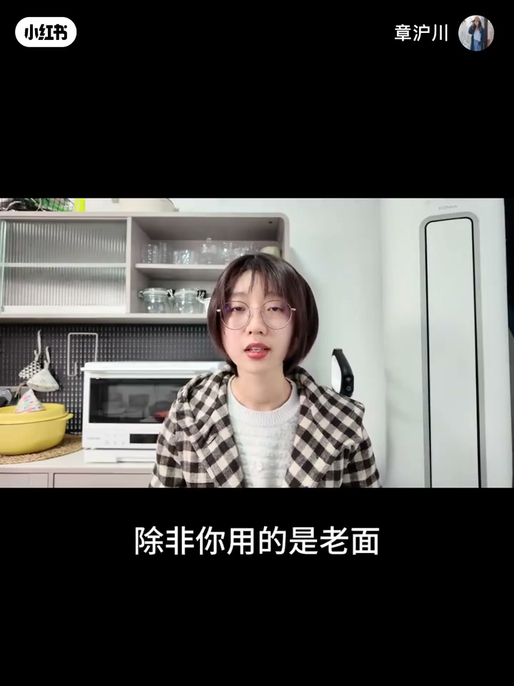
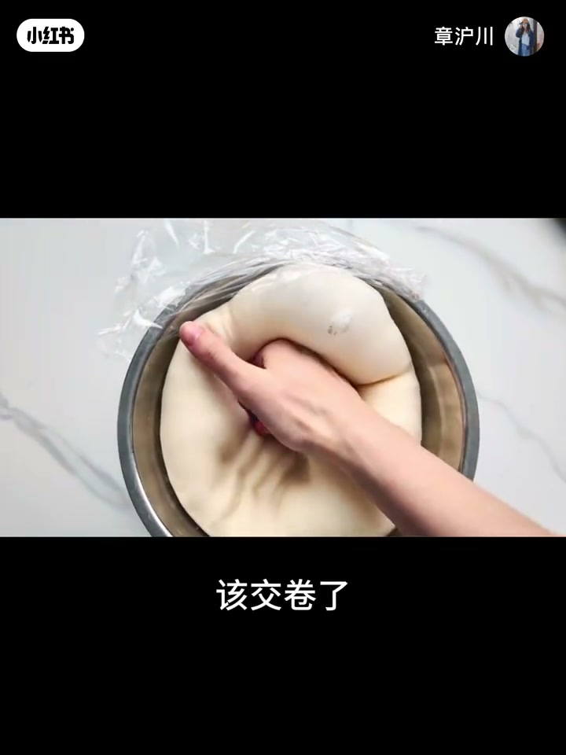
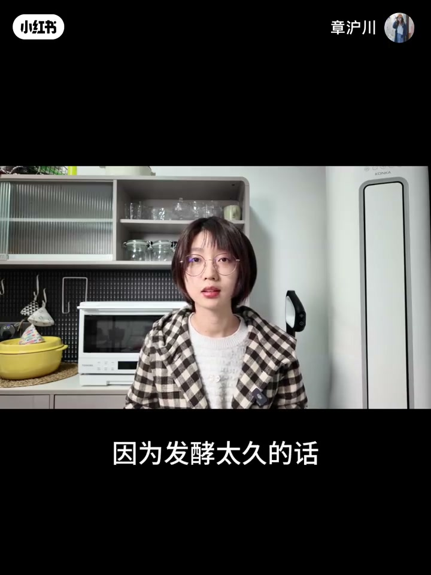
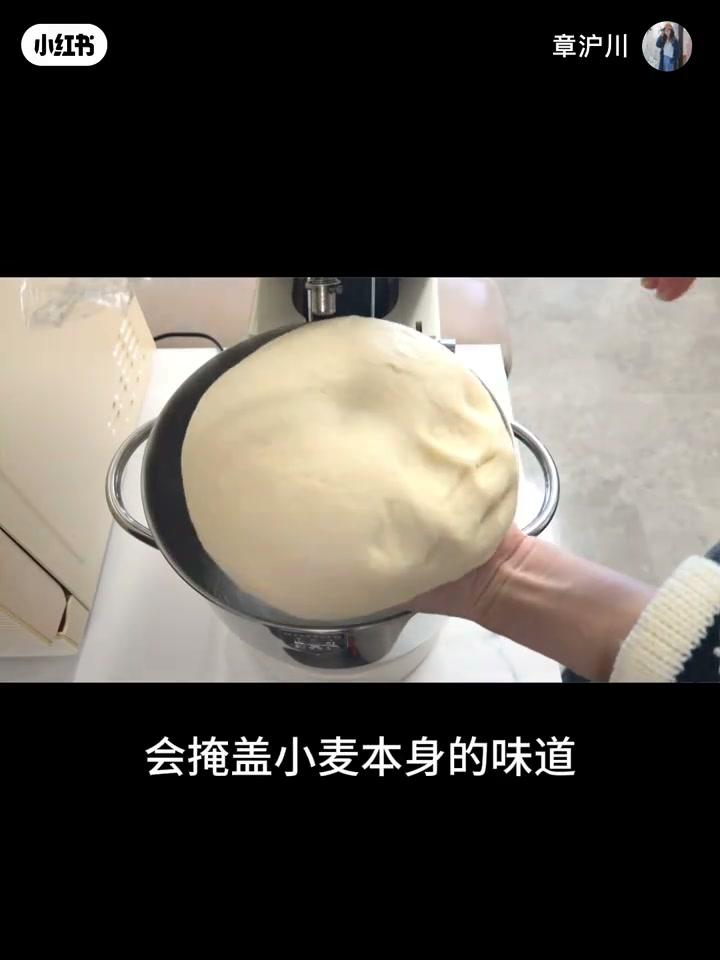
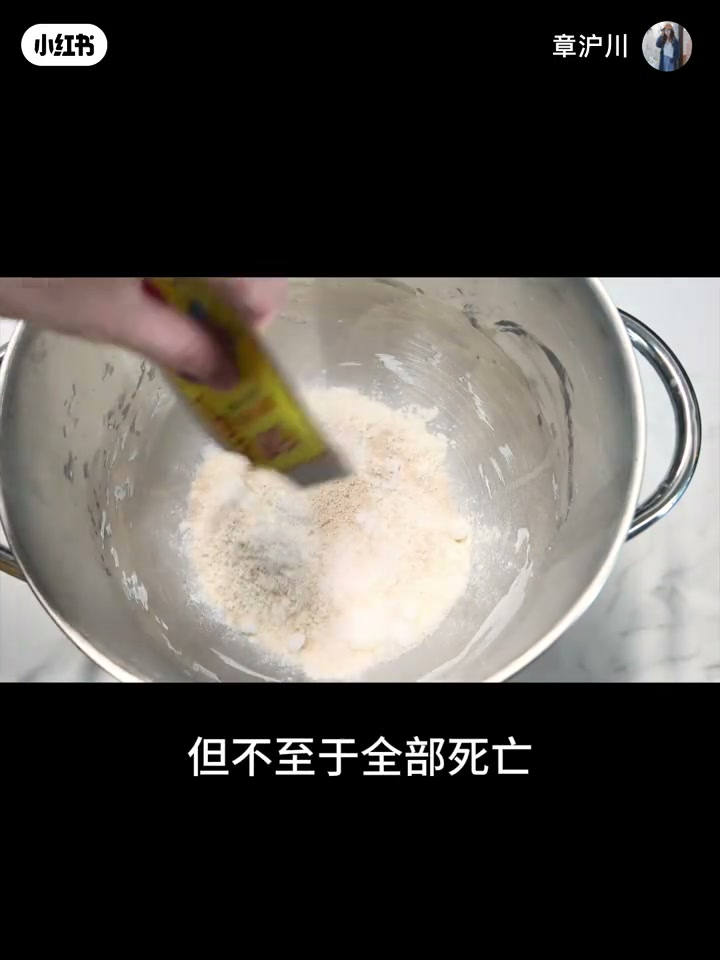
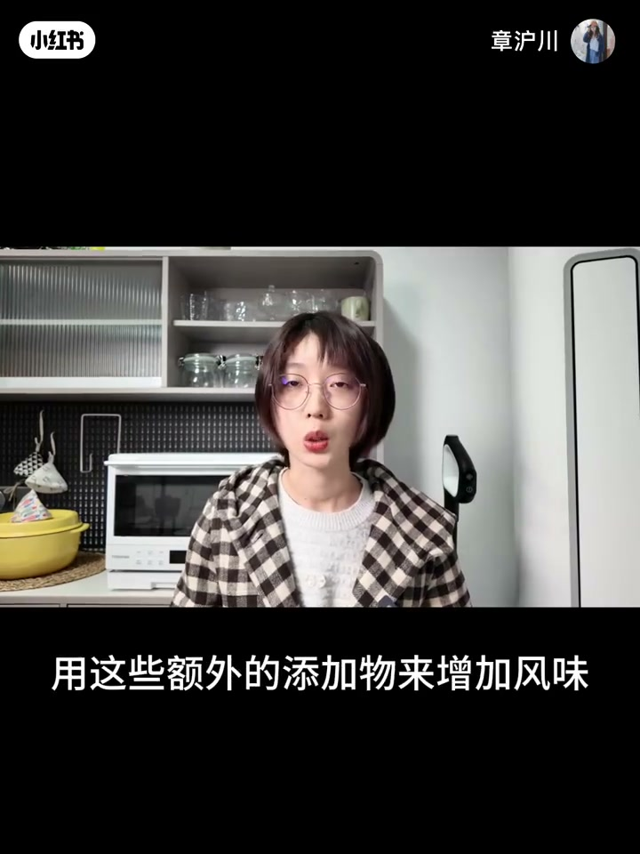

内容要点
章沪川「面食基本功」上期：面包像馒头其实正常——二者表兄弟，都是面粉玩酵母的命，差别主要在烤与蒸。进一步把问题拆成风味与结构两维度；唤醒小麦味道依赖时间／酶解／菌种策略，也要警惕糖油掩盖本味。Whisper 对本片大量空洞，正文以残留口播、烧录字幕与画面操作为准。
知识结构
面包像馒头正常；馒头是中国的面包，步骤同源。
把风味与结构掌握好，才有资格谈「唤醒」。
酶解要数小时；慢酵／老面／液种是常见路径。
糖油多会盖小麦味；酵母温度管理「不至于全死」。
可用额外添加物增香，但要想清是不是在掩盖。
先接受「像馒头」是同源产物的正常态，再分别打磨风味（时间／菌／少掩盖）与结构（下期／相关面筋课）；急性子加糖油往往换来更馒头的香精感。
00:00-01:10面包像馒头：不是丢人，是亲戚
开场承认新手痛点：烤完归来永远像馒头、发面常遇死面。作者第一次做完面包才大彻大悟：像馒头非常正常，因为本来就是一个东西——馒头是中国的面包，面包是外国的馒头。
本质都是面粉在「玩」酵母的命；步骤都含揉面发酵排气分割整形醒发，无非一个烤一个蒸。分不清太正常。


01:10-04:00风味与结构：两个维度
画面绿字标出「风味」「结构」。作者强调要把这两个维度掌握好，才有谈唤醒小麦的前提。随后用手揉面团、展示面粉与吐司撕开纤维，给出「应该就是这样子」的组织目标。
本段口播 ASR 几乎空白，叙述依据字幕与操作画面；不编造未出现的配方克数。


04:00-09:00时间、老面、液种：慢才能出味
字幕提到酶解需要好几个小时；慢发酵「正好还顺了」。例外句：「除非你用的是老面」——暗示预发酵／老面可改变风味路径。排气时拳头压面「该交卷了」，检查发酵是否到位。
后期出现液种（液态预酵）容器特写，呼应用时间换香气的策略。



09:00-13:17别用糖油盖住小麦，酵母也别烫死
明确提醒：某些加料「会掩盖小麦本身的味道」。加酵母时字幕「但不至于全部死亡」——讨论温度／环境对酵母伤害的程度感，而非精确致死温度表。
结尾讨论「用这些额外的添加物来增加风味」：可以，但是否在用香精感代替麦香，要自己取舍。片尾还提到耐高糖／低糖酵母等选种细节（ASR 残片）。整体定位为风味启蒙，结构细节见系列其他期。



完整转录（19段）
以下文本由 Whisper medium 模型自动转录，可能存在少量识别误差，已尽可能修正。
没有玩过烘焙背的同学
在我第一次做面包的面试之后
我才终于有那种灵光一线般的大测大悟
我得出一个结论
面包做的像馒头其实非常正常
因为它俩本来就是一个东西
馒头就是中国的面包
面包就是外国的馒头
它们本质上没有什么区别
都是用面粉在玩命 玩酱母菌的命
制作方法也都包括了揉面发酵排气分割
整形醒发这些步骤
无非一个是烤的一个真的而已
所以馒头和面包就像是表兄弟
你可以一起把它划分到面包这个大家族里
分不清 太正常了
面上几乎全都是反着来的
就没有问题
耐高糖酵母和低糖酵母